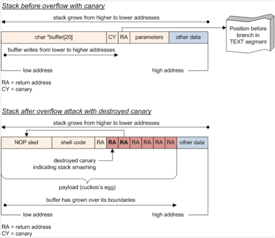
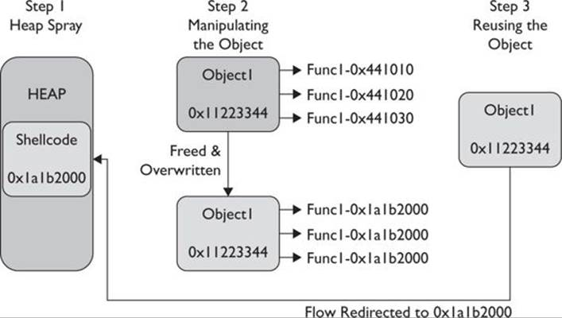
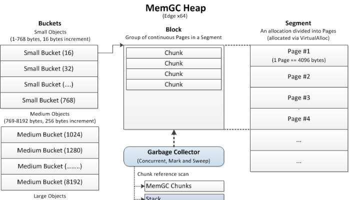
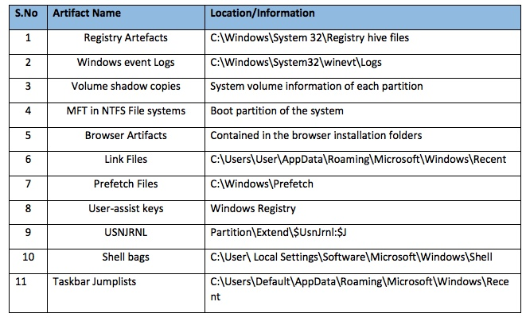
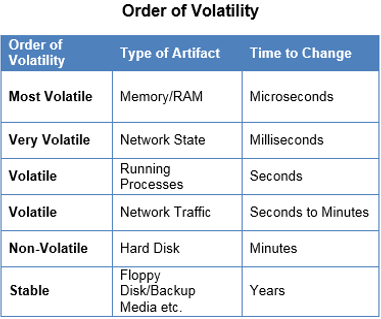
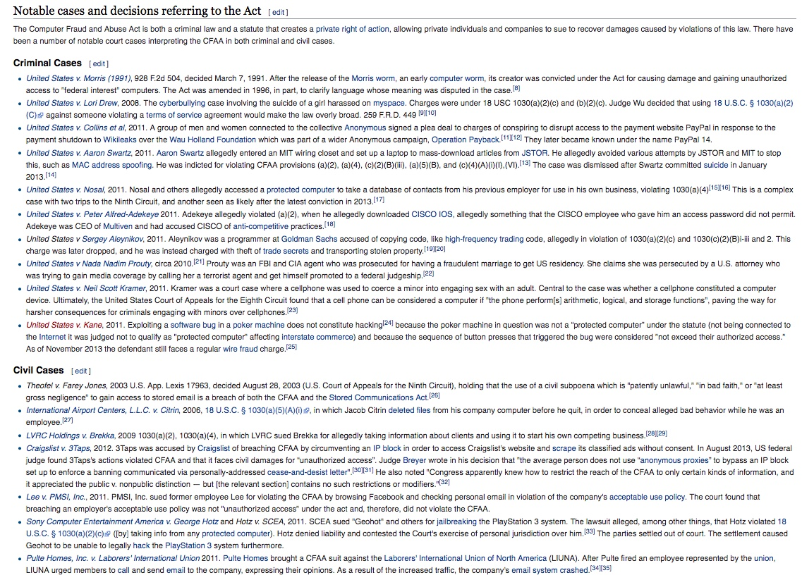
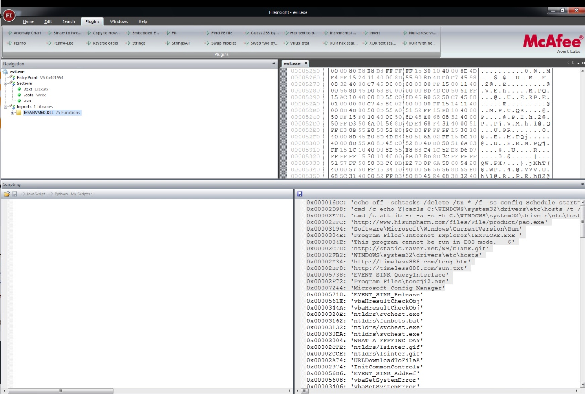
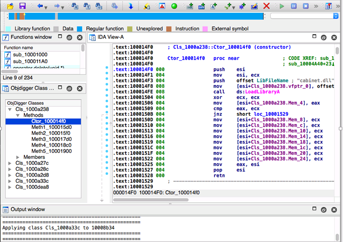

CS373 Weekly Writeups
Week 4
In Week 4, the lectures centered around the topic of vulnerabilities and exploitation. In specific we studied the more common methods in which attackers use to gain access inside a network defensive perimeter, and that's the internet browser.
Nowadays, most business have strong DMZ and firewalls to protect the business from attacks outside the perimeter, but as we've learned in this course, a business is only as strong as its weakest link. In modern times, attackers employ social engineering tactics to gain access inside a network. One strategy that employs social engineering along with sophisticated attacks is having the user visit a page, have the page load JavaScript code that will take advantage of a browser function or vulnerability.
This week we discussed two ways we can manipulate memory via the stack through the browser.
- Stack Smashing / Memory Corruption
- Use After Free Vulnerabilities
Stack Smashing
In order to corrupt the stack, we need to a few things as per the lectures:
- Perform a crash triage
- Determine the return address offset
- Position our shellcode
- Find the address of our shell code so it can "live" on the stack
A stack smash occurs when the stack buffer is filled with data supplied from an untrusted user and the data is corrupts the stack and malicious executable code is injected into the stack. The code is executed when the stack attempts to perform a return to a function via the return address on EIP, but the attacker uses a NOP slide to position EIP to their malicious code on the stack.
For reference, as mentioned in the lectures, a NOP slide is a sequence of no operations meant to "slide" the CPU's instruction pointer to a desired destination whenever the program branches to a memory address anywhere on the slide.
Operating systems have now implemented various protection schemes to protect against a stack smash. In my research I found these protections can be classified into three categories:
- Detect the stack buffer overflow has occurred and prevent redirection of EIP to the malicious code
- Prevent the execution of malicious code from the stack without directly detecting the stack buffer overflow
- Randomize the memory space such that finding executable code becomes unreliable (i.e. Address Space Layout Randomization / ASLR)
Use-After-Free
Use after free is another method used to exploit memory via the browser. This vulnerability is triggered when an object in memory is freed and then reference later by the application, but the attacker has control of the freed object/memory. In order for this the following conditions must be present for the attacker to exploit:
- Load shellcode in memory at a predictable address
- Force an object to be freed and then overwrite it with one that includes a virtual table pointer (VPTR) linked to a fake vtable (virtual table) pointing to the shellcode loaded in step 1
- Trigger a vulnerability in the browser to reuse the freed object (which now has malicious pointers inserted by the attacker) and redirect execution flow to the shellcode loaded in memory
Below is a diagram showing the flow of a use-after-free exploit:
Modern browsers, like Microsoft's Edge in Windows 10, have functions in place to mitigate use after free exploits. Recently, Microsoft introduced MemGC which prevents the freeing of memory chunks if references to them are found. MemGC checks the registers and the stack for chunk references, and in addition, scans the contents of MemGC managed chunks for references.
Below is flowchart of how MemGC works:
For more information you can click on the link below. It's an article from LinkedIn on a BlackHat session in which the presenter discusses MemGC.
MemGC: Use-After-Free Exploit Mitigation In Edge and IE In Windows 10
Tools
Also, in the lecture we discussed how WinDbg is a great tool for establishing breakpoints in applications and examining the applications assembly code. WinDbg is also extremely useful when attempting to review the stack and heap starting points, strings in the applications, and register contents, including the instruction pointer.
WinDbg can also be used to install breakpoints in running process/applications. Allowing a user to observe behavior incrementally in real time. Below is an article discussing debugging malware with WinDbg
Week 3
The last weeks we've talked about malware dissection and offense, but this week we discussed malware defense. There are various ways to protect your network infrastructure from malware defense, but in my research, I found nothing is more effective than network segmentation and virtualization. By layering your defense, you make it difficult for malware to penetrate your network infrastructure and in the event they succeed, make it difficult in scanning and exporting valuable data.
As discussed in the lecture, there are static and behavioral methodologies in detecting potential device compromises. Some examples include:
- Network firewalls
- Install antivirus on hosts
- Access control policy
- Group policy for particular divisions of a business
- Host agents that report on suspicious files and behavior anomalies
Furthermore, there are tools simple enough to aid your efforts for malware defense. In the lecture, we discussed Yara and Cuckoo. Tools simple enough and open source that allow it to be used by large to small businesses and personal consumers. These applications allow you to create rules where you define certain information to find when scanning files and directories.
There are other open source projects that involve the monitoring of host machine behaviors. One example is the Open Source HIDS Security or OSSEC. Per the documentation on OSSEC GitHub's page, OSSEC is actively monitoring all aspects of Unix system activity with file integrity monitoring. Log monitoring, rootcheck, and process monitoring. A commercial counterpart to this project is Carbon Black.
Furthermore, through virtualization, IT professionals can now deploy virtualized app and desktop solutions for applications considered high risk, specifically applications with access to the external internet (i.e. web browsers). By hosting applications on VDI's, if a user visits a site with malware injection the malware only affects the virtual system and is denied access to the host or server hosting the virtual session. This makes it easy to quarantine and remove the infected virtualization and restore a recent backup.

Week 2
This week there were several topics that struck a note with me. The lectures had a strong focus on standard procedures for obtaining computer forensic evidence. We also discussed the following:
- Challenges in obtaining forensic data from a standard/conventional hard drive vs an SSD hard drive
- The order of volatility with data in a computer
- Important files to capture when performing forensics on volatile data in a Windows environment
- What data we expect to retrieve from these files that are considered important and volatile
- Windows Registry and the critical data that can be found in the files, and a good tool to use to review these files, RegEdit
The procedures for obtaining forensic evidence on a computer is not much different when obtaining evidence from other crimes. As an investigator you must do the following:
- Create a journal, with dates and times, of your actions and observations
- Gather evidence in a secure environment, and with a sense of urgency, capture any volatile data first while keeping a light footprint on the machine in question
- Establish a chain of custody with the evidence
- Note all checksum hashes of the data collected to ensure it can be compared at a later time, further adding credence to the integrity of the data
- Make backup copies of the information retrieved to safeguard against loss, theft, or destruction of the valuable information
- When running forensics on the machine, search for deleted/erased files for evidence
- Ensure the evidence is stored a secure location where only individuals with clearance can access the data
Doing a quick Google search I found various publications, both from the public and private sectors, on how to handle malware evidence. You may click on the link for find this information:
Google Search - Standard Procedures for Malware Forensics
Another thing I was completely unware of was the challenges in collecting forensics evidence from SSD drives. As explained by forensicmag.com in this article Forensic Mag - Forensic Insight into Solid State Drives, SSD's require you to write data in blocks. This is always true. Every time we want to write new data to the SSD, it takes a copy of that information, clears a block hence clearing the bits in that block, and writes the data. The same is true if we modify data that already exists in a block. Per the article, the best example to illustrate this is a Etch-A-Sketch model:


In my research, most malware investigators have yet to solve this problem with SSD's. However if you wish to find more information below is a link to a Google search with various articles and white papers:
Google Search - Forensics with hard disk vs SSD
Artifacts are objects or areas within a computer system that hold important information relevant to the activities performed on the computer by the user. Below is a table of files, and their locations, that are critical to malware forensics:
In particular, the Registry can contain incredibly valuable information for a forensic investigator. It is a hierarchical database that contains the default and user-defined setting in a Windows system. It serves a repo, that monitors and records the activities that a user performs on a system in the form of registry entries. This includes programs installed and uninstalled, USB devices connected, most recently accessed files, IP addresses and more. Most of this can be viewed with RegEdit.

Another key take away for the week is the order of volatility for data. This is imperative for all malware investigators since it dictates what analysis you'll be performing first on a suspect machine.
Lastly, I searched for cases that have been imperative in establishing case law for computer crimes, particularly with the presentment of digital artifacts as evidence. Below are some interesting case law and rules regarding digital evidence:
Week 1
In the wake of the largely publicized disclosures of the Meltdown and, more serious, Spectre vulnerabilities, it’s more important than ever for the common user to be educated on security. As a student of computer science, I feel it’s more important than ever to understand how a threat is detected, prevented, and analyzed.
Also important is understanding the bad actor and their intentions. This week we covered the basics of malware. This includes:
- Understanding the malware industry, past to present
- Different variations of malware. This includes viruses, adware, spyware, worms, ransomware and more.
- Infection vectors
- Tools used by engineers to reverse engineer and analyze the malware statically and behaviorally.
But by far my biggest take away in this week’s materials are understanding and identifying the motives for a bad actor to move forward in committing to what’s known as the APT kill chain. This can be partially solved by reviewing the malware code, but also on how the malware is implemented. I find the instructors example of a USB infection interesting, in that the log created by the malware is only retrievable by the original USB which caused infection as a sign that it’s an internal attack.
There are 2 ways to analyze malware
- Static – this means analyzing the code in the malware along with the strings found in the malware
- Behavior – understanding what the malware is attempting to do via it’s HTTP requests and process creation, modification, and deletion in the operating system
In any case below are tools that anyone curious to reverse engineer a malware will need and why they need it:
- FakeNet – to monitor all TCP/IP traffic attempting to connect on various ports.
- Flypaper – to block all of the outgoing TCP/IP traffic
- Process Monitor – monitors the processes executing on Windows and in specific, what is touching and what resources is the process using.
- Process Explorer – a useful to complete a string dump of the process
- McAfee’s File Insight – a useful tool to attempt to reverse engineer what the source code is doing via assembly language, string dumps, and other plugins.
- IDA Pro – another product that will help you reverse engineer an executable
- Command Prompt – having some basic knowledge of command prompt can help someone detect if the malware has scheduled new tasks, created files hidden to the user and more.
Static Analysis
Engineers use techniques like string analysis, binary analysis and source analysis as a means of static analysis. In Lab 1, I performed a string analysis of the evil.exe file by opening the file with McAfee’s File Insight tool. As the image below shows, the executable had various interesting strings, including strings to HTTP sites where the malware would download more than 1 executable.
Binary tools like the one pictured below are also used to analyze the malware’s source code in assembly. This helps determine what the malware is attempting to do by checking what registry’s and driver’s it’s attempting to utilize in the code.
Engineer’s will need to use tools to monitor the malwares behavior within the operating system, identifying artifacts it leaves behind. An example of such a tool is FakeNet, or even Wireshark, that monitors the HTTP requests attempted by the malicious executable. Below is an example of a malicious malware attempting to download another executable, more than likely also malware.

Conclusion
Malware analysis is similar to piecing together a puzzle. It really does require thinking outside the box and reviewing multiple artifacts in order to understand the malwares payload and it's intentions. This is not exclusive to just analyzing the malwares binary/source code, but also it's strings and behaviors, in particular within a network. Malware analysis can be extensively but imperative in order to prevent your data from being at risk of exposure.